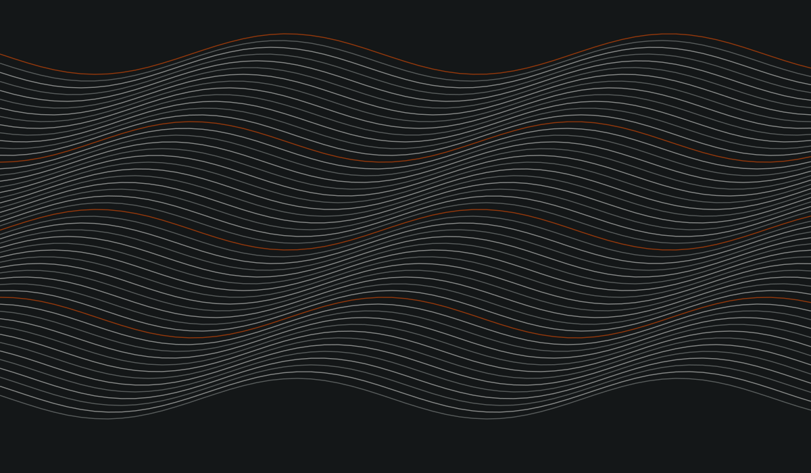

ARCHIVO ACTIVO
Investigación en artes visuales y sistemas generativos.
Un espacio de experimentación con tecnologías emergentes y herramientas algorítmicas para nuevas inteligencias visuales.
01 / PROYECTOS
Índice de proyectos
Cargando proyectos…
02 / INVESTIGACIÓN
Archivo activo
03 / LABORATORIO
Información

Laboratorio de investigación visual
AISUNI investiga las relaciones entre artes visuales, sistemas generativos y tecnologías emergentes. Sus proyectos reúnen experimentos, métodos y resultados en un archivo en evolución.
El laboratorio trabaja con código, algoritmos, medios digitales y procesos visuales; documenta tanto los resultados como las decisiones que los producen.
04 / CONTACTO